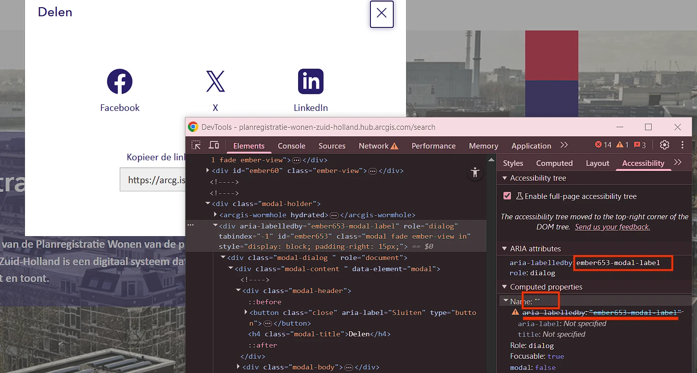
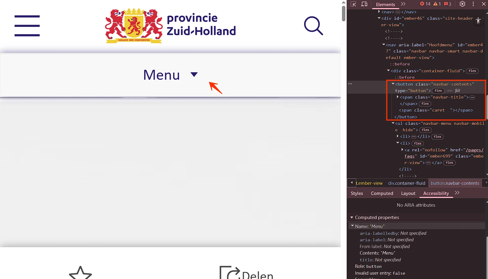

Audit digitale toegankelijkheid van website planregistratie-wonen-zuid-holland.hub.arcgis.com
Samenvatting
Wij hebben de website planregistratie-wonen-zuid-holland.hub.arcgis.com onderzocht op 16 april 2026. In dit rapport lees je welke punten verbetering behoeven en hoe deze kunnen worden aangepakt.
Het onderzoek richt zich op zowel de techniek als de content van de website.
Bovenaan de website staat een logo dat als link werkt en de volledige tekst "provincie Zuid-Holland" toont. De alternatieve tekst (alt-tekst) is echter alleen "Home". De alt-tekst moet alle zichtbare tekst van het logo bevatten, zodat bezoekers die de afbeelding niet kunnen zien dezelfde informatie krijgen.
Deze bevinding raakt ook succescriterium 2.5.3: de toegankelijke naam van de link komt niet overeen met de zichtbare tekst in het logo. Daardoor kan de link niet correct met spraakbesturing worden geactiveerd — bezoekers spreken de zichtbare tekst uit, terwijl de toegankelijke naam iets anders is ("Home").
User story
Als bezoeker die een schermlezer gebruikt, die de pagina leest met afbeeldingen uit, of die op de alt-tekst vertrouwt om te bevestigen wat er in het logo staat, heb ik nodig dat de alt van het logo de volledige zichtbare tekst bevat — niet alleen een deel — want zit er maar de helft in, dan krijg ik een onvolledige naam voor de organisatie, kan ik niet zien of ik op de juiste site ben, en verdwijnen belangrijke details (ondertitels, sub-merken, eigendomsverhoudingen) die ziende bezoekers in één oogopslag wel zien.
Oplossing
Pas de alternatieve tekst aan zodat de volledige zichtbare tekst is opgenomen: "provincie Zuid-Holland — naar de homepage".
#2 - Logo heeft geen tekstalternatief (het alt-attribuut ontbreekt)
In de footer staat een logo dat als link werkt zonder tekstalternatief. Het alt-attribuut ontbreekt.
Een img-element moet altijd een alt-attribuut hebben. Logo's zijn informatieve afbeeldingen en hebben een tekstalternatief (alt-tekst) nodig. De alt-tekst moet de volledige tekst bevatten die in het logo staat. Zo begrijpen bezoekers die de afbeelding niet kunnen zien alsnog wat erop staat.
Deze bevinding raakt ook succescriterium 4.1.2: de link heeft geen toegankelijke naam; succescriterium 2.4.4: het doel van de link is onduidelijk; en succescriterium 2.5.3: de toegankelijke naam van de link komt niet overeen met de zichtbare tekst in het logo. Daardoor kan de link niet correct met spraakbesturing worden geactiveerd — bezoekers spreken de zichtbare tekst uit, terwijl de toegankelijke naam iets anders is.
User story
Als bezoeker die de pagina met een schermlezer hoort, die de pagina leest met afbeeldingen uit, of die op het logo vertrouwt om te bevestigen dat ik op de juiste site ben, heb ik nodig dat het logo een alt-tekst heeft met alle zichtbare tekst uit het logo — want zonder alt-tekst zegt mijn schermlezer ofwel niets, ofwel alleen "afbeelding", kan ik niet vaststellen van welke organisatie deze pagina is, en omdat dit logo ook een link naar de homepage is, verlies ik het belangrijkste navigatiepunt van de site.
Oplossing
Voeg een alt-attribuut toe aan deze afbeelding met de zichtbare tekst van het logo.
#3 - Links hebben dezelfde tekst maar verschillende bestemmingen
Impact: MediumType: ContentWCAG: 2.4.4EN: 9.2.4.4
In de footer staat een knop "Feeds verkennen" die een dialoogvenster opent. In dit dialoogvenster staan meerdere links met dezelfde toegankelijke naam "Weergave (wordt op een nieuw tabblad geopend)", maar met verschillende bestemmingen. Dat kan verwarrend zijn voor gebruikers.
User story
Als bezoeker die links volgt met een schermlezer of die een pagina scant door van link naar link te springen, heb ik nodig dat elke link met dezelfde zichtbare tekst ofwel naar dezelfde plek wijst, ofwel zijn afwijkende bestemming laat zien in de toegankelijke naam — via visueel verborgen context of een aria-label — want nu delen meerdere links dezelfde naam maar leiden ze naar verschillende plekken, kan mijn schermlezer ze niet uit elkaar houden, belandt mijn spraakcommando op de verkeerde link, en volg ik links op goed geluk.
Oplossing
Zorg ervoor dat de linktekst duidelijk aangeeft waar de link naartoe leidt. Dit is bijvoorbeeld op te lossen door de tekst in het aria-label aan te passen: "Weergave RSS (wordt op een nieuw tabblad geopend)".
#4 - Knoppen met dezelfde tekst voeren een andere actie uit
In de footer staat een knop "Feeds verkennen" die een dialoogvenster opent. In dit dialoogvenster staan meerdere knoppen met dezelfde toegankelijke naam "URL kopiëren", maar met verschillende functies. Dat is verwarrend voor schermlezergebruikers, omdat de identieke tekst niet onderscheidt welke actie elke knop uitvoert.
User story
Als bezoeker die knoppen activeert met een schermlezer, spraakbesturing of door een lijst met bedieningselementen te scannen, heb ik nodig dat knoppen die verschillende acties uitvoeren ook verschillende namen dragen — want nu delen meerdere knoppen dezelfde toegankelijke naam terwijl ze iets anders doen, kan mijn schermlezer ze niet uit elkaar houden in zijn knoppenlijst, en activeer ik per ongeluk de verkeerde actie.
Oplossing
Zorg ervoor dat de toegankelijke naam van elke knop duidelijk en uniek beschrijft welke actie de knop uitvoert. Dit is bijvoorbeeld op te lossen door de tekst in het aria-label aan te passen: "URL kopiëren voor RSS".
#5 - Kop heeft geen juiste opmaak
Impact: MediumType: ContentWCAG: 1.3.1EN: 9.1.3.1
In de footer staat een knop "Privacy beheren" die een dialoogvenster opent. In dit dialoogvenster is de tekst "Privacy-instellingen" niet gemarkeerd als een kop. Wanneer tekst als kop fungeert maar geen juiste markup heeft, verliest hij zijn semantische betekenis en wordt hij ontoegankelijk voor bezoekers die afhankelijk zijn van hulptechnologieën zoals schermlezers. Koppen zijn essentieel om de structuur van inhoud te navigeren en te begrijpen.
User story
Als bezoeker die de pagina scant door met een schermlezer van kop naar kop te springen, heb ik nodig dat elke tekst die eruitziet als een kop ook daadwerkelijk als kop in de code staat — omsloten door h1 tot en met h6 — want de kop-snelkoppeling van mijn schermlezer vindt alleen echte koppen, en een stuk tekst dat visueel is opgemaakt als kop maar gebruikmaakt van div, span, strong of een paragraaf is voor mij onzichtbaar als ik de pagina probeer te scannen of direct naar een sectie wil springen.
Oplossing
Markeer deze teksten met de juiste kop-elementen (h1 tot en met h6), passend bij hun rol en hiërarchie in de inhoud.
#6 - Dialoogvenster heeft geen toegankelijke naam
Impact: GrootType: TechniekWCAG: 4.1.2EN: 9.4.1.2

Aan de zijkant staat een knop met een deel-icoon die een dialoogvenster opent. Dit dialoogvenster heeft geen toegankelijke naam. De oorzaak is dat het aria-labelledby-attribuut verwijst naar een id die niet bestaat. Een blinde bezoeker heeft deze naam nodig om de inhoud van het dialoogvenster te begrijpen.
User story
Als bezoeker die met een schermlezer door dialoogvensters navigeer, heb ik nodig dat elk dialoogvenster een toegankelijke naam heeft — want nu opent het dialoogvenster zonder enige naam, kondigt mijn schermlezer alleen "dialoog" aan zonder verdere informatie, en heb ik geen idee waar het dialoogvenster over gaat of waarom het verschijnt.
Oplossing
Dit is op te lossen door aan het aria-labelledby-attribuut een bestaande id toe te voegen die verwijst naar de kop van het dialoogvenster, óf door een aria-label-attribuut met een duidelijke en bondige tekst toe te voegen aan het dialoogvenster.
#7 - Toetsenbordfocus is niet zichtbaar
Impact: GrootType: TechniekWCAG: 2.4.7EN: 9.2.4.7
In de footer, onder de kop "Krachtig Zuid-Holland", staat een link met het logo "Provincie Zuid-Holland". Deze link heeft geen zichtbare toetsenbordfocus door de CSS-eigenschap outline: 0.
User story
Als bezoeker die met het toetsenbord navigeer, met een schermvergroter werk of slechtziend ben, heb ik nodig dat elk interactief element een zichtbare focusindicator behoudt — outline: 0 hoort nooit gebruikt te worden zonder een duidelijk zichtbare vervanger — want nu is de focus-outline weggehaald door CSS, heb ik geen visueel signaal waar mijn toetsenbord staat, en wordt tabben door de pagina een gokspel.
Oplossing
Verwijder de declaratie outline: 0, of vervang deze door een duidelijk zichtbare alternatieve focusstijl. Gebruik :focus-visible om de focusindicator alleen te tonen bij toetsenbordnavigatie:
Als de standaard browser-outline niet bij het ontwerp past, vervang hem dan door een eigen focusstijl in plaats van hem volledig te verwijderen.
#8 - Het menu werkt niet correct met toetsenbord
Impact: GrootType: TechniekWCAG: 2.4.3EN: 9.2.4.3
Bovenaan staat een menuknop (met drie horizontale lijnen) die het navigatiemenu opent. Het focusbeheer van dit menu klopt niet. Het menu overlapt de pagina-inhoud, maar de toetsenbordfocus blijft niet binnen het menu. Daardoor kunnen bezoekers naar elementen op de onderliggende pagina tabben terwijl het menu nog openstaat, wat tot verwarring en onbedoelde interacties kan leiden.
User story
Als bezoeker die met het toetsenbord of een schermlezer door het menu navigeer, heb ik nodig dat de focus binnen het menu blijft zolang het openstaat — niet wegglipt naar de onderliggende pagina — want nu kan ik vanuit het menu naar de verborgen inhoud erachter tabben, blijft het menu visueel open terwijl mijn focus ergens anders zit, en kan ik niet meer zien op welke laag van de pagina ik bezig ben.
Oplossing
Implementeer correct focusbeheer voor het menu:
Focus trappen: Houd de toetsenbordfocus binnen het menu zolang het openstaat. Bezoekers mogen niet naar elementen buiten het menu kunnen tabben tot het menu is gesloten (via de sluitknop of de Esc-toets).
Automatisch sluiten: Een alternatief is om het menu automatisch te sluiten zodra de focus zich buiten het menu verplaatst. Dit geeft onmiddellijke feedback en voorkomt dat bezoekers "verdwalen" achter het open menu.
#9 - Toetsenbordfocus wordt afgedekt door het menu
Bovenaan staat een menuknop (met drie horizontale lijnen) die het navigatiemenu opent. Het menu overlapt interactieve elementen op de onderliggende pagina (zoals de deel-knop en andere). Deze onderliggende elementen kunnen nog steeds toetsenbordfocus krijgen, ook al worden ze door het menu verborgen. Focusbare elementen moeten zichtbaar zijn. Focus toestaan op verborgen elementen zorgt voor verwarring bij toetsenbord- en schermlezergebruikers.
Hetzelfde probleem zie je ook op een klein scherm.
User story
Als bezoeker die met het toetsenbord of met beperkt zicht door het menu navigeer, heb ik nodig dat de elementen onder een geopend menu uit de tab-volgorde worden gehaald — of dat het menu de onderliggende pagina volledig vervangt — want nu dekt het zij-menu de rest van de pagina af, maar krijgen de onderliggende knoppen nog steeds focus, verdwijnt mijn toetsenbordfocus in onzichtbare bedieningselementen achter het menu, en heb ik geen idee wat ik op het punt sta te activeren.
Oplossing
Dit is op te lossen door:
Toetsenbordfocus trappen: Houd de focus binnen het menu tot het expliciet wordt gesloten (via een sluitknop of de Esc-toets).
Menu automatisch sluiten: Sluit het menu zodra de focus zich buiten het menu verplaatst.
Belangrijk: de onderliggende interactieve elementen mogen geen focus krijgen zolang het mobiele menu openstaat.
#10 - Menuknop geeft geen statusinformatie
Impact: GrootType: TechniekWCAG: 4.1.2EN: 9.4.1.2

Op een klein scherm verschijnt de knop "Menu" om het navigatiemenu te openen. Deze knop geeft geen informatie over de status van het menu (open of gesloten) door aan bezoekers die hem niet kunnen zien, zoals mensen die een schermlezer gebruiken.
User story
Als bezoeker die met een schermlezer door het menu navigeer, heb ik nodig dat de menuknop de huidige status (open of gesloten) kenbaar maakt — via aria-expanded of via visueel verborgen tekst die met de status meebeweegt — want nu geeft de knop mijn schermlezer geen informatie over de status van het menu, kan ik niet vaststellen of activeren openen of sluiten betekent, en wordt navigeren gokwerk.
Oplossing
Gebruik een van de volgende methoden om de status van het menu door te geven:
Visueel verborgen tekst: Voeg tekst toe naast de knop die de status beschrijft (bijvoorbeeld "Menu open" of "Menu gesloten") en verberg die visueel met CSS, terwijl hij wel toegankelijk blijft voor schermlezers. Werk deze tekst dynamisch bij zodra de status van het menu verandert.
aria-expanded-attribuut: Gebruik het aria-expanded-attribuut op het menuknop-element. Zet aria-expanded="true" wanneer het menu openstaat en aria-expanded="false" wanneer het gesloten is. Werk dit attribuut dynamisch bij zodra de status van het menu verandert.
#11 - Zoomen op 400% leidt tot verlies van content
Als deze pagina op een schermresolutie van 1280 bij 1024 pixels wordt bekeken en wordt ingezoomd naar 400%, wordt alle pagina-inhoud in een smal venster getoond en gaat er content verloren, bijvoorbeeld de kop "Planregistratie Wonen Zuid-Holland".
Zoomen naar 400% mag de leesbaarheid van geen enkel informatief element aantasten.
User story
Als bezoeker met een visuele beperking die de pagina inzoomt tot 400% op een 1280×1024-scherm (effectief een viewport van 320px), heb ik nodig dat elk stuk tekst op de pagina zichtbaar blijft — niet afgesneden, verborgen of buiten de viewport geduwd wordt — want nu snijdt zoomen delen van de tekst weg, het hulpmiddel waarop ik vertrouw om de pagina te lezen is juist degene die de woorden wegneemt, en ik krijg de content die ik niet zie niet meer terug.
Oplossing
Zorg ervoor dat alles werkt en leesbaar blijft bij zoomen tot 400% op een scherm van 1280 bij 1024 pixels.
#12 - aria-live staat onterecht op interactieve elementen
In de footer opent de knop "Feeds verkennen" een dialoogvenster. Binnen dit dialoogvenster hebben meerdere links en knoppen het attribuut aria-live="polite", bijvoorbeeld de kopieer-icoon-knoppen en links zoals "Weergave (wordt op een nieuw tabblad geopend)".
Links en knoppen zijn interactieve bedieningselementen, geen statusmeldingen. Het aria-live-attribuut is bedoeld voor dynamische content-updates die automatisch moeten worden aangekondigd door hulptechnologieën, en is niet passend op standaard interactieve bedieningselementen.
User story
Als schermlezergebruiker die door de pagina navigeer, heb ik nodig dat links en knoppen alleen worden aangekondigd als interactieve bedieningselementen, niet als live-regio's. Wanneer standaard bedieningselementen onnodig aria-live="polite" gebruiken, kan mijn schermlezer onverwachte of herhaalde meldingen uitspreken, waardoor het dialoogvenster verwarrend en lastiger in gebruik wordt.
Oplossing
Verwijder aria-live="polite" van links en knoppen, tenzij ze echt als live-regio fungeren. Moet er een statusupdate worden aangekondigd, gebruik dan een aparte toegewijde live-regio (bijvoorbeeld role="status" of een element met aria-live="polite").
Als bezoeker met een visuele beperking, leeftijdsgerelateerd contrastverlies of een scherm in fel zonlicht, heb ik nodig dat elke tekst kleiner dan 24px en niet-vet minimaal 4,5:1 contrast houdt ten opzichte van de achtergrond — want de tekst valt onder de standaard contrastdrempel en de gebruikte kleuren blijven daaronder, met als gevolg lopende tekst die ik met moeite lees of helemaal oversla.
Oplossing
Deze tekst is kleiner dan 24px en niet-vet, dus het contrast moet minimaal 4,5:1 zijn.
Bij de kop "Planregistratie Wonen Zuid-Holland" staan decoratieve afbeeldingen van gekleurde vierkanten zonder alt-attribuut. Hetzelfde geldt verderop onder de kop "Contact".
Als bezoeker die een schermlezer gebruikt, die via spraakbesturing navigeer, die afbeeldingen heeft uitgeschakeld op een trage verbinding, of die de pagina met een schermvergroter bekijkt, heb ik nodig dat elk img-element een alt-attribuut heeft — leeg (alt="") als de afbeelding puur decoratief is, of met een duidelijke beschrijving als hij informatie overbrengt — want zonder alt zegt mijn schermlezer ofwel niets, ofwel leest hij het bestandspad voor, heeft mijn spraakcommando geen naam om op te richten, vertelt de placeholder bij een mislukte afbeelding me niets, en verdwijnt de betekenis die de afbeelding zou moeten dragen eenvoudigweg voor mij.
Oplossing
Als de afbeelding puur decoratief is en geen betekenis overbrengt, moet het alt-attribuut aanwezig zijn maar leeg (alt="").
#15 - Animatie kan niet worden gepauzeerd, gestopt of verborgen
Impact: GrootType: TechniekWCAG: 2.2.2EN: 9.2.2.2
Onder de kop "Verandering van het Zuid-Hollandse landschap in de afgelopen 50 jaar" staat een GIF-animatie met een reeks afbeeldingen per jaar. Deze animatie duurt langer dan 5 seconden en kan niet worden gepauzeerd, gestopt of verborgen. Dit kan sterk afleiden voor gebruikers met cognitieve beperkingen of aandachtsproblemen. Daarnaast kunnen schermlezergebruikers moeite hebben om andere content op de pagina te lezen wanneer er voortdurend beweging is.
User story
Als bezoeker met een cognitieve beperking, met aandachtsproblemen, met evenwichtsklachten waardoor bewegende content misselijk maakt, of die leest met een schermlezer die moeite heeft naast geanimeerde content, heb ik nodig dat elke animatie of bewegende content die langer dan 5 seconden duurt een duidelijk zichtbare knop heeft om te pauzeren, stoppen of verbergen — want nu loopt de beweging continu door, kan ik me niet concentreren op de tekst erachter, en heb ik geen manier om de pagina lang genoeg stil te houden om hem te lezen.
Oplossing
Bied een mechanisme waarmee gebruikers de animatie kunnen pauzeren, stoppen of verbergen, zoals een pauze- of stop-knop. Een alternatief is de CSS media query prefers-reduced-motion te respecteren, zodat animaties worden uitgeschakeld voor gebruikers die om verminderde beweging hebben gevraagd.
#16 - Informatieve afbeelding mist een tekstalternatief
Impact: MediumType: ContentWCAG: 1.1.1EN: 9.1.1.1
Onder de kop "Verandering van het Zuid-Hollandse landschap in de afgelopen 50 jaar" staat een afbeelding met een GIF-animatie die laat zien hoe de provincie Zuid-Holland in de loop der jaren is veranderd. Deze afbeelding heeft een leeg alt-attribuut.
User story
Als bezoeker met een visuele beperking of blindheid die een schermlezer gebruikt, heb ik nodig dat de geanimeerde afbeelding ten minste een korte alternatieve tekst heeft, zodat ik begrijp dat het een animatie is die de veranderingen in het Zuid-Hollandse landschap laat zien.
Oplossing
Voeg een korte beschrijving toe aan het alt-attribuut van de afbeelding, bijvoorbeeld: "Animatie van het veranderende landschap van Zuid-Holland van 1970 tot 2020."
#17 - Logo heeft geen tekstalternatief (het alt-attribuut ontbreekt)
Impact: GrootType: TechniekWCAG: 1.1.1EN: 9.1.1.1
Het logo bovenaan de website heeft geen tekstalternatief. Het alt-attribuut ontbreekt.
Een img-element moet altijd een alt-attribuut hebben. Logo's zijn informatieve afbeeldingen en hebben een tekstalternatief (alt-tekst) nodig. De alt-tekst moet de volledige tekst bevatten die in het logo staat. Zo begrijpen bezoekers die de afbeelding niet kunnen zien alsnog wat erop staat.
Hetzelfde probleem zie je verderop onder de kop "In samenwerking met" bij de logo's.
User story
Als bezoeker die de pagina met een schermlezer hoort, die de pagina leest met afbeeldingen uit, of die op het logo vertrouwt om te bevestigen dat ik op de juiste site ben, heb ik nodig dat het logo een alt-tekst heeft met alle zichtbare tekst uit het logo — want zonder alt-tekst zegt mijn schermlezer ofwel niets, ofwel alleen "afbeelding".
Oplossing
Voeg een alt-attribuut toe aan deze afbeelding met de zichtbare tekst van het logo.
Op deze pagina, in de zijbalk, in secties met verborgen content, zijn de elementen die de verborgen content openen en sluiten niet gemarkeerd als koppen. Bijvoorbeeld "Verzamelingen", "Locatie" en andere.
De teksten die de accordeon-secties openen en sluiten functioneren als koppen voor die content. Deze teksten moeten programmatisch als kop herkenbaar zijn.
User story
Als bezoeker die met een schermlezer door accordeons navigeer, heb ik nodig dat elke accordeon-trigger die een sectie inleidt gemarkeerd is als een echte kop — bijvoorbeeld door de trigger-knop te wikkelen in h2 of h3 — want de trigger-labels fungeren als sectiekoppen, mijn kop-snelkoppeling zou daarop moeten landen, en zonder die rol verdwijnt de hele accordeon uit mijn overzicht van de pagina.
Op een klein scherm staat een knop met een filter-icoon die een dialoogvenster opent. In dit dialoogvenster is de tekst "Filters" niet gemarkeerd als een kop. Wanneer tekst als kop fungeert maar geen juiste markup heeft, verliest hij zijn semantische betekenis en wordt hij ontoegankelijk voor bezoekers die afhankelijk zijn van hulptechnologieën zoals schermlezers. Koppen zijn essentieel om de structuur van inhoud te navigeren en te begrijpen.
User story
Als bezoeker die de pagina scant door met een schermlezer van kop naar kop te springen, heb ik nodig dat elke tekst die eruitziet als een kop ook daadwerkelijk als kop in de code staat — omsloten door h1 tot en met h6 — want de kop-snelkoppeling van mijn schermlezer vindt alleen echte koppen, en een stuk tekst dat visueel is opgemaakt als kop maar gebruikmaakt van div, span, strong of een paragraaf is voor mij onzichtbaar als ik de pagina probeer te scannen of direct naar een sectie wil springen.
Oplossing
Markeer deze teksten met de juiste kop-elementen (h1 tot en met h6), passend bij hun rol en hiërarchie in de inhoud.
#20 - Meerdere pagina's hebben dezelfde title-tekst
Elke pagina hoort een unieke en beschrijvende titel te hebben. Dubbele titels verwarren gebruikers en maken het lastiger om tussen pagina's te navigeren, vooral voor mensen die op de titelbalk of browsertabs vertrouwen om pagina's te herkennen.
User story
Als bezoeker die met een schermlezer navigeer, die meerdere browsertabs openhoudt, die de browsergeschiedenis scant of die pagina's aan bladwijzers toevoegt, heb ik nodig dat elke pagina op de site een unieketitle heeft die zijn eigen content beschrijft — want nu delen verschillende pagina's dezelfde titel, kondigt mijn schermlezer voor allemaal dezelfde woorden aan, zijn mijn browsertabs niet uit elkaar te houden, en laten geschiedenis en bladwijzers drie verschillende pagina's achter elkaar zien met hetzelfde label.
Oplossing
Pas het title-element aan zodat elke pagina een unieke en informatieve titel heeft die de inhoud van die pagina nauwkeurig weergeeft.
#21 - Niet alle navigatie-landmarks hebben een toegankelijke naam
Er staan meerdere navigatie-landmarks (nav-elementen) op de pagina, maar niet alle hebben een toegankelijke naam. Zo wordt de zij-navigatie blootgesteld als navigatie-landmark zonder beschrijvende naam.
Wanneer er meerdere navigatieregio's zijn, moet elke landmark een unieke en betekenisvolle toegankelijke naam hebben, zodat gebruikers van hulptechnologieën ze uit elkaar kunnen houden en efficiënt kunnen navigeren.
User story
Als schermlezergebruiker die via landmarks navigeer, heb ik nodig dat elke navigatieregio een duidelijke en unieke toegankelijke naam heeft, zodat ik het doel van elke navigatieregio begrijp en direct naar de juiste kan springen. Als sommige navigatie-landmarks zonder naam zijn, hoor ik meerdere generieke "navigatie"-regio's en weet ik niet welke de zij-navigatie is of bij welke sectie hij hoort.
Oplossing
Geef elk navigatie-landmark een toegankelijke naam, bijvoorbeeld via aria-label of aria-labelledby, zodat elke navigatieregio duidelijk herkenbaar is.
#22 - Status van het dropdown-menu wordt niet doorgegeven aan de schermlezer
Impact: GrootType: TechniekWCAG: 4.1.2EN: 9.4.1.2
Op deze pagina opent de knop "Lijst" een dropdown-menu, maar de code geeft niet aan of dit dropdown-menu open of gesloten is. Hulptechnologieën hebben deze informatie nodig om de status van het menu aan gebruikers door te geven, vooral aan mensen die blind of slechtziend zijn.
User story
Als bezoeker die met een schermlezer navigeer, heb ik nodig dat elke knop die een dropdown-menu in- en uitklapt zijn huidige status kenbaar maakt via aria-expanded (true als het openstaat, false als het gesloten is) — want nu toont en verbergt de knop het dropdown-menu terwijl de code er niets over zegt, geeft mijn schermlezer me geen idee of het dropdown-menu op dit moment zichtbaar is, en heropen ik iets wat al openstond of sluit ik iets wat ik net wilde lezen.
Oplossing
Het aria-expanded-attribuut kan de status weergeven. Zet aria-expanded="true" wanneer het dropdown-menu openstaat en aria-expanded="false" wanneer het gesloten is. Let op: aria-expanded werkt alleen betrouwbaar wanneer de focus op de knop blijft. Kan de focus buiten de knop vallen terwijl het dropdown-menu openstaat, gebruik dan visueel verborgen tekst om de status van het menu aan te geven. Werk deze tekst dynamisch bij zodra de status van het dropdown-menu verandert.
Er is een knop "Lijst" die een groep radio-opties opent. Deze opties zijn geïmplementeerd met de rol menuitemradio. menuitemradio is echter bedoeld voor radio-items binnen een menu- of menubar-patroon en vereist het bijbehorende ouder-element en toetsenbordgedrag. Er zijn geen bijbehorende ouder-elementen voor deze elementen. Meer informatie: https://www.w3.org/WAI/ARIA/apg/patterns/menubar/.
User story
Als schermlezer- of toetsenbordgebruiker, heb ik nodig dat radio-opties de juiste semantiek gebruiken zodat ik begrijp met welk type bedieningselement ik te maken heb en de verwachte toetsenbordnavigatie kan gebruiken. Als standaard keuzes worden blootgesteld als menuitemradio, krijg ik te horen dat ik in een menu zit terwijl dat niet zo is, waardoor het bedieningselement verwarrend en lastiger wordt.
Oplossing
Gebruik native radio-inputs (input type="radio") op de juiste manier gegroepeerd (bijvoorbeeld met fieldset en legend), of implementeer een goede radiogroup met kind-elementen die role="radio" gebruiken.
#24 - Groep radio-opties heeft geen toegankelijke naam
Er is een knop "Lijst" die een groep radio-opties opent. Deze groep heeft geen toegankelijke naam. Daardoor horen gebruikers van hulptechnologieën de afzonderlijke opties wel, maar begrijpen ze mogelijk niet wat het doel van de groep is of welke instellingen de opties beheren (weergave, sortering, filters, of andere).
User story
Als schermlezergebruiker heb ik nodig dat de groep radio-opties die door de knop "Lijst" wordt geopend een duidelijke toegankelijke naam heeft, zodat ik begrijp waar de opties over gaan en welke instelling ik wijzig (weergave, sortering, filters of andere). Zonder groepslabel hoor ik de opties los van elkaar zonder hun doel te kennen.
Oplossing
Geef de groep radio-opties een toegankelijke naam, bijvoorbeeld met aria-label.
#25 - aria-live staat onterecht op interactieve elementen
Er zijn knoppen met het attribuut aria-live="polite", bijvoorbeeld een knop met een drie-puntjes-icoon. Knoppen zijn interactieve bedieningselementen, geen statusmeldingen. Het aria-live-attribuut is bedoeld voor dynamische content-updates die automatisch moeten worden aangekondigd door hulptechnologieën, en is niet passend op standaard interactieve bedieningselementen.
Als schermlezergebruiker die door de pagina navigeer, heb ik nodig dat links en knoppen alleen worden aangekondigd als interactieve bedieningselementen, niet als live-regio's. Wanneer standaard bedieningselementen onnodig aria-live="polite" gebruiken, kan mijn schermlezer onverwachte of herhaalde meldingen uitspreken, waardoor het dialoogvenster verwarrend en lastiger in gebruik wordt.
Oplossing
Verwijder aria-live="polite" van knoppen, tenzij ze echt als live-regio fungeren. Moet er een statusupdate worden aangekondigd, gebruik dan een aparte toegewijde live-regio (bijvoorbeeld role="status" of een element met aria-live="polite").
De link met het logo en de links "Aanmelden", "FAQs", "Home" en "Over Planregistratie Wonen" hebben geen zichtbare toetsenbordfocus door de CSS-eigenschap outline: 0.
Als bezoeker die met het toetsenbord navigeer, met een schermvergroter werk of slechtziend ben, heb ik nodig dat elk interactief element een zichtbare focusindicator behoudt — outline: 0 hoort nooit gebruikt te worden zonder een duidelijk zichtbare vervanger — want nu is de focus-outline weggehaald door CSS, heb ik geen visueel signaal waar mijn toetsenbord staat, en wordt tabben door de pagina een gokspel.
Oplossing
Verwijder de declaratie outline: 0, of vervang deze door een duidelijk zichtbare alternatieve focusstijl. Gebruik :focus-visible om de focusindicator alleen te tonen bij toetsenbordnavigatie:
De bevindingen op deze pagina zijn al eerder beschreven.
Over dit onderzoek
Leeswijzer
Onze rapporten zijn anders. Bij het bespreken van de gevonden problemen volgen wij niet de structuur van de norm, maar die van jouw website of app. Hierdoor kun je gewoon per pagina of scherm aan de slag gaan. Wel zo makkelijk! Je vindt verderop een overzicht van alle pagina’s met problemen.
We geven je bij elk gevonden issue een paar voorbeelden, maar niet een complete lijst. Controleer zelf of het probleem ook nog op andere plekken voorkomt. Zie het rapport als een leidraad.
Gebruikte norm
Dit onderzoek laat zien in hoeverre de website op dit moment voldoet aan WCAG 2.2, niveau A en AA. WCAG staat voor Web Content Accessibility Guidelines. Dit is de internationale norm voor digitale toegankelijkheid. De Europese norm EN 301 549 bevat alle eisen van WCAG op niveau A en AA.
In dit rapport hebben we korte beschrijvingen van de succescriteria uit de norm opgenomen, met een algemene uitleg erbij. Wil je ze helemaal lezen? Bekijk dan de documentatie van WCAG.
Gebruikte onderzoeksmethode
We gebruiken de onderzoeksmethode WCAG-EM van het W3C. Het proces ziet er als volgt uit:
vaststellen wat binnen en buiten scope valt
vaststellen welke technologieën zijn gebruikt
steekproef (sample) samenstellen
steekproef onderzoeken
gevonden issues beschrijven
Het grootste deel van het onderzoek doen we met de hand. Voor een deel van de toegankelijkheidseisen gebruiken we automatische tools als ondersteuning, zoals axe-core en Chrome Developer Tools.
Belangrijk om te weten
Dit rapport helpt je om de toegankelijkheid van je website te verbeteren. Maar let op: het is geen definitieve, volledige lijst van alle aanwezige toegankelijkheidsproblemen. Dat zit zo:
Het is een steekproef
Ten eerste is het onderzoek gebaseerd op een steekproef. Die is op een betrouwbare manier genomen, en de meeste problemen zullen daardoor zeker aan het licht komen. Toch kan een probleem net buiten de steekproef vallen. Bij een volgend onderzoek kan het wel ontdekt worden.
Op basis van falsificatie
We beoordelen vanuit het principe van falsificatie. Dat houdt in dat we proberen te bewijzen dat iets niet waar is, in plaats van te bevestigen dat het klopt. ‘Voldoet’ betekent daarom dat we geen reden hebben gevonden om een punt af te keuren. Maar als we later wél een reden vinden, kan het alsnog worden afgekeurd.
Voortschrijdend inzicht
Het komt voor dat de beoordeling van een succescriterium op detailniveau verandert. De norm beschrijft namelijk niet élk mogelijk scenario. Samen met andere onderzoeksbureaus overleggen we hoe we met bepaalde situaties omgaan. Zo kan iets dat nu wordt afgekeurd, soms bij een volgend onderzoek worden goedgekeurd en andersom.
Oplossen leidt tot nieuw probleem
Ten slotte kan het gebeuren dat bij het oplossen van een probleem onbedoeld een nieuw toegankelijkheidsprobleem ontstaat. Dat komt dan bij een volgend onderzoek pas naar voren.
Hoe werkt dit rapport?
Bevindingen bekijken en filteren
Alle gevonden toegankelijkheidsproblemen staan onder Gevonden problemen. Je kunt de bevindingen filteren op:
Impact (Groot, Medium, Klein, Advies) — hoe ernstig is het probleem voor de gebruiker?
Type (Content, Techniek) — moet de inhoud of de techniek worden aangepast?
Status (Open, Opgelost) — welke problemen zijn al verholpen?
Voortgang bijhouden
Je kunt je voortgang op twee manieren bijhouden:
CSV-export — exporteer alle bevindingen als CSV-bestand en laad het in een (online) spreadsheet om met je team samen te werken.
Jira-export — exporteer alle bevindingen als Jira-compatibel CSV-bestand. Importeer het via Jira > Issues > Import issues from CSV. Bevindingen worden aangemaakt als bugs met prioriteit op basis van impact.
Registreer in de browser — activeer deze optie om per bevinding bij te houden of het is opgelost. Je voortgang wordt opgeslagen in je browser. Niemand anders kan je resultaat zien. Let op: de voortgang is gekoppeld aan je browser. Als je een andere browser of een ander apparaat gebruikt, begint de telling opnieuw.
Plan van aanpak — download een geprioriteerd plan van aanpak om de gevonden problemen stap voor stap op te lossen. Dit is beschikbaar bij audits vanaf maart 2026.
Link naar een specifieke bevinding delen
Bij elke bevinding verschijnt een link-icoon wanneer je er met de muis overheen gaat. Klik op dit icoon om de directe link naar die bevinding te kopiëren. Je kunt deze link plakken in een e-mail of chatbericht, bijvoorbeeld om een vraag te stellen aan Proper Access over een specifiek punt.